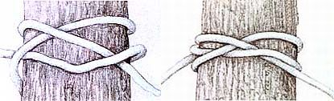

Clove Hitch A fast and easy way to secure a rope to a post, and a knot with almost endless versatility. It works best on round posts but can be made more secure with a hall hitch. It comes loose easily when tension is released on the rope.